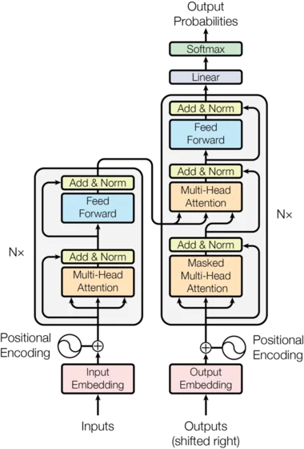

Qué es la Atención?, modelos de Transformers
2025-09-24
La atención es como cuando lees una frase y tu cerebro decide qué palabras son más importantes para entender el significado.…
Leer artículoExplore el archivo editorial de Creangel sobre búsqueda empresarial, datos e inteligencia artificial.

2025-09-24
La atención es como cuando lees una frase y tu cerebro decide qué palabras son más importantes para entender el significado.…
Leer artículo2025-06-25
Viernes. Su jefe aprueba un nuevo sistema. Y usted, en lugar de celebrarlo, recuerda historias de terror: meses sin poder facturar, proyectos millonarios que nu…
Leer artículo
2025-06-11
Son las 9:00 AM. Empieza su día laboral buscando una propuesta enviada la semana pasada. Revisa el correo, SharePoint, Google Drive, OneDrive, Teams… nada. Desp…
Leer artículo2025-06-05
Imagine este escenario: es lunes por la mañana, y en la sala de juntas, cada departamento presenta su visión basada en diferentes interpretaciones de los datos.…
Leer artículo2025-05-28
Es viernes, 4:30 PM. Reunión crítica con su cliente más importante en 30 minutos. Necesita ESE contrato. El que firmaron hace tres meses. Está “en algún lugar” …
Leer artículo2025-05-21
Imagine un escenario común: lunes por la mañana, su equipo necesita una tabla de precios actualizada para enviar una cotización urgente. Finanzas remite a opera…
Leer artículo
2025-05-14
Imagine este escenario: Se encuentra en medio de una reunión crucial con un cliente potencial que podría transformar el rumbo de su empresa. De repente, surge u…
Leer artículo2025-05-09
¿Cuánto tiempo dedica su equipo a buscar información importante? ¿Cuántas oportunidades se pierden porque los datos críticos están dispersos en diferentes siste…
Leer artículo2022-12-16
El valor de los datos no estructurados y el desafío de su manejo en las organizaciones…
Leer artículo2022-11-18
La pandemia les dejo a las empresas una nueva experiencia en trabajo remoto. Cada día las organizaciones por calidad de vida a sus empleados, caóticos sistemas …
Leer artículo
2022-11-08
¿Su empresa genera miles de datos cada segundo, pero le toma días o semanas obtener insights valiosos? No está solo. El 73% de las empresas luchan por convertir…
Leer artículo2022-11-08
A medida que la era basada en datos da paso a una economía basada en la información, la relevancia de los datos es esencial para obtener información práctica, a…
Leer artículo2022-11-03
Existe una barrera muy importante pero algo oculta entre la visión y la ejecución empresarial basada en datos. Para ejecutar un plan de análisis de datos signif…
Leer artículo
2022-10-25
Muchas veces usamos motores de búsqueda para ingresar directamente palabras de búsqueda o palabras clave en el cuadro de acuerdo con nuestra inercia habitual. E…
Leer artículo2022-10-04
Cada día las necesidades de las compañías para mejorar los métodos de procesamiento y recopilación de procesos de información, los mecanismos para almacenar y a…
Leer artículo
2022-09-27
En el mundo actual, la competencia sin cuartel, la presión en los márgenes de utilidad, el costo de la creación y el lanzamiento de nuevos proyectos, el poco es…
Leer artículo2022-09-20
Pensemos como consumidor, detrás de cualquier canal virtual o presencial, lo que buscamos es una solución rápida, eficiente y consecuente con nuestras peticione…
Leer artículo2022-09-15
La pregunta más escuchada en los pasillos de las compañías es ¿Como se comportan los consumidores? En los departamentos de marketing y ventas, en la gerencia de…
Leer artículo